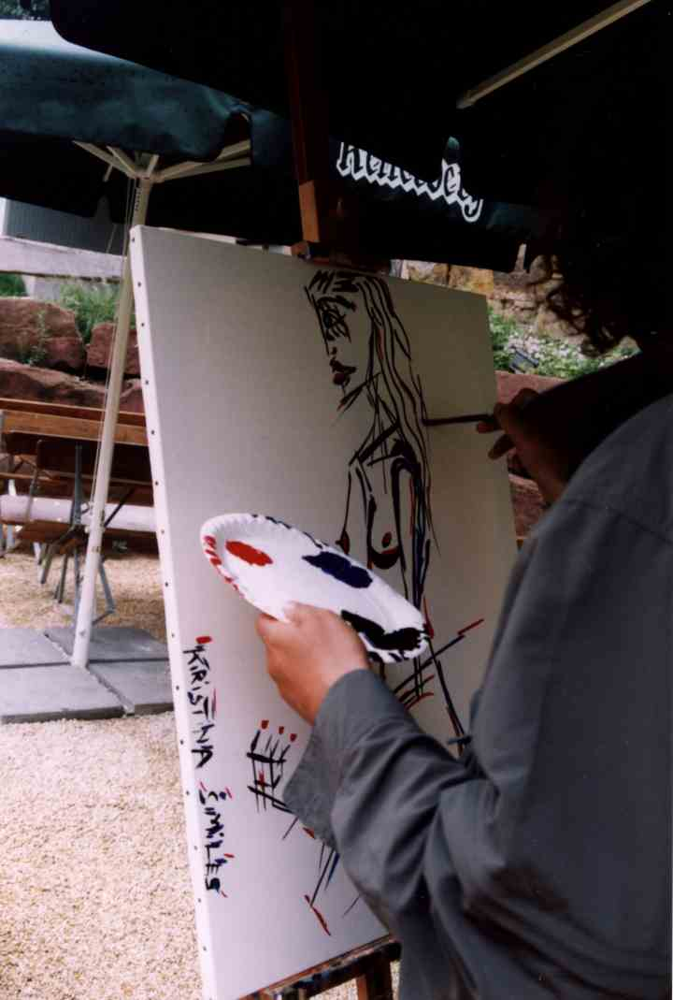
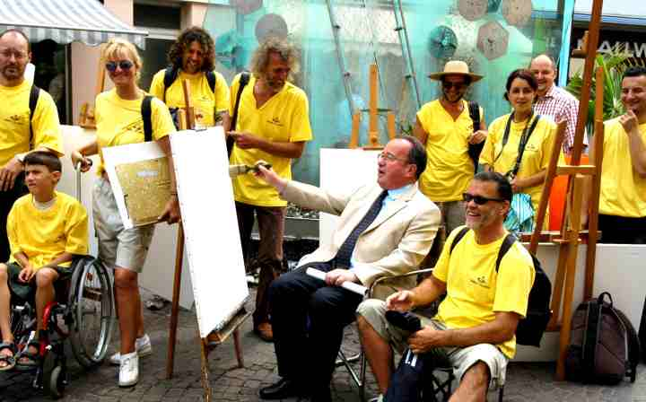

ArthurX in Aalen Open Art,
Stuttgart, Germany,
Jule 2003
10 Painters from all over Europe were invited.Stuttgart, Germany,
Jule 2003
The curator was Christine Bergam.
The location is in the south of Germany close to Stuttgart.
5 Days.
Rain and sunshine.
Each day a new painting.
High rising mountains in the background.
The press had a concise review of ArthurX.
"Hollands ArthurX genügen wenige schwungvolle Pinselstriche
um vor allem die Damenwelt in seinen Bildern zu verewigen."
Swäbische Post, 8 Juli 2003.
"A few momentumful brush lines suffice for Holland's ArthurX
to perpetuate above all the lady world in his pictures."
In Aalen they organize an open air painting party.
So in the center of town we all got painting.
Because of the rain we took cover under the parasols of an biergarten.
At the opening ceremony I discovered Kristina the older sister of Ronald.
So after one day painting the buildings, what is not my style,
I asked the special teacher and caretaker of Ronald to bring Ronalds'sister.
We met in Cafe Danneman, where Ronald went to paint himself every afternoon.
I started to make sketches of Kristina.
Ronald (in the wheelchair) and his painting friend (in the green shirt) soon discovered,
that I could not paint at all.
"Nur Kritzen Kratze!"

Here I'm working in the Biergarten again.
"Kristina Smiles as the Devil Turns."
The week after all the painting was finished, had a wonderful weather.
We went biking.
In the hills around Aalen to Nordlingen.
And later down the Donau valley from Passau (Germany) to Vienna.
A scetch of Kristina standing in front of me.
All scetches together took about half an hour.
On our way to Aalen we stepped out of the train.
It was the begin of the Lorelei valley, the road to the gorges of the Rhine.
We biked along side the river with cliffs, steep forests, sharp turns and small towns.
In one of those towns was a church.
So I went in, became absorbed with rest and lighted two candles.
I'm not religious or superstitious,
but in a church there's not much else to do.
You need to light two candles.
One for my mother.
One for my old-uncle Gerrit.
One for the beautiful girls I have met.
One for the girls I will meet.
And God was gracious to me like never before.
Kristina at the vernisage.
Posing with her shoulders in diagonal to the painting and me.

A close-up of Kristina.
"Kristina's Eyes, Lips and the move of her hair."
Kristina still posing and Elizabeth sitting in the background.

This sketch is the beginning of the painting:
"Kristina Smiles as the Devil Turns."
The exhibition was through out the center of town in small shops like this lady boutique.
Kristina couldn't help laughing at so much fuss about her.
Almost embarassing.
All photo's were printed afterwards.
So I didn't cheat and watch the photo and make a copy of it in paint.
This sketch was the basis for the painting:
"Kristina's Eyes, Lips and the move of her hair."

"Kristina Smiles as the Devil Turns."
Katherina reading the pricelist to see,
what her painting should fetch.

We were an army of painters.
Powerful and yellow.
Dressed to kill any illusion.
This is Katherina.
She was tuesday in Cafe Danneman.
She is the girlfriend of the teacher of Ronald.
While I made the sketches, she wondered:
"Why's that dope watching me all the time?"
"Katherina Kneeling Watching Talker"
Wednesday afternoon in the biergarten.
Sketch of Katherina Tuesday.
Exhibition in the Schaposhop.
Vernisage with the models, Sunday morning, journalists and notables.
Ok, I never have models,
but instant inspiration.
"Katherina Dance!"
Late Tuesday afternoon.
Painting with the children of Ronalds' class.
Katherina in the background with her remarkable posture.
This was the first day: so painting the buildings.
This is not really a building that is there.
But could we make something like that with the same traditional wooden beam structure.
New architecture with the same old living and varied materials.
A view from above the town.
A pattern of organically grown streets,
With unique houses piece by piece.
Every building, every window has its own soul.
No copies of copies of copies like in modern architecture and townplanning.
I was standing in the newly build, high rise, discustingly ugly town hall.
The curator: Christine Bergam with, well what should it be, a grandchild.
She organized it so well.
Should get an award for it.
We met an American photographer and artist, Piet Keitel , who got back to his ancestors in Aalen.
He makes simply great photographs.
It sounds easy, it is easy, but most people can't.
Knows the best pizza in town.
And makes wild scetches of cityscapes, like Paris.
One day I will tour with a big band and he will make the great pictures.
The townhall had a small tower.
According to the local lore Napoleon had slept there.
"Napoleon's night in Aalen."